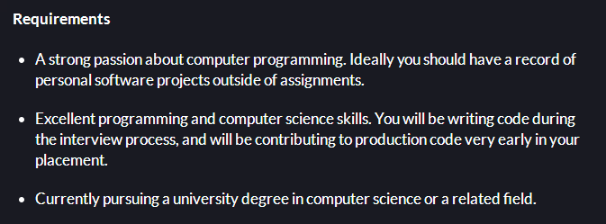

WEBF1 E-Portfolio - UP696811
Curriculum Vitae
As part of my coursework, I have created a draft CV (Curriculum Vitae) targeted at a chosen job position that can be found below. This was originally submitted as a PDF file, but has been marked up in HTML for the purpose of this site.
Alexander Piggott
Address:
Davidson
Park Crescent
Midhurst
West Sussex
GU29 9ED
E-mail: piggott.alex@yahoo.co.uk
Education
2013 - Present
University of Portsmouth - BSC (HONS) Computer Science - Undergraduate (1st year)
- 65% in a Programming assignment
- 83% over several in-class Programming tests
- Studying other units including Computer Architecture with Maths and Web Foundations
2011 - 2013
Midhurst Rother College Sixth Form
- Achieved a pass in Mathematics, IT, and French
- Completed an Extended Project Level 3 (Passed with an A grade)
- Participated in Young Enterprise program - lead a small department in designing and creating a professional looking website for the company
2005 - 2011
Midhurst Rother College
- 10 GCSE passes (A*-C) including Mathematics, English Language and IT
Work Experience
Summer 2012 - Xyratex, Havant (storage device solutions)
- 1 week working in a fast-paced programming environment
- Created a program from scratch in Microsoft Visual Basic for another employee
Summer 2010 - Dexam, Midhurst (kitchenware shop and warehouse)
- 1 week working in a team of roughly 15 people
- Looked at how the company advertised themselves over the web and how this could be improved
Personal projects & previous programming experience
- Created a relational database from scratch using Microsoft Access. The database was designed for a small charity to store records on their sponsors and beneficiaries
- Experience with: Python, Java, Visual Basic and HTML
IT Skills
- Very familiar with Microsoft Office - particularly Microsoft Access
- Have training in various Adobe packages, including Fireworks, InDesign, DreamWeaver and Flash Professional
Hobbies and interests
- Hobbies include: Computer/video games, music, reading, football, golf
- Interests include: technology, development of games, current events
Job position source. As this position may not be open at the time of viewing, I have screenshotted the job description and embedded it below:

Finally, the requirements for the position:
